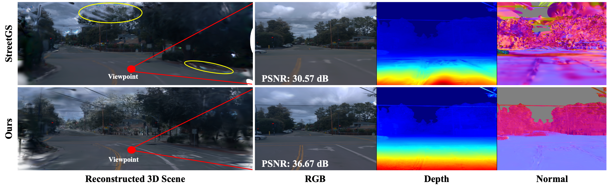
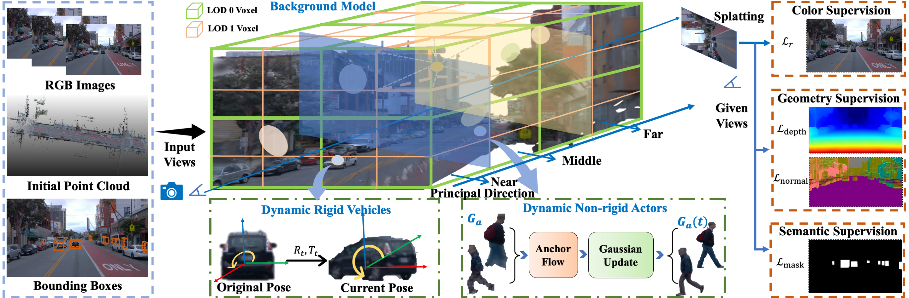

Reconstructing large-scale dynamic driving scenes remains challenging due to the coexistence of static environments with extreme depth variation and diverse dynamic actors exhibiting complex motions. Existing Gaussian Splatting based methods have primarily focused on limited-scale or object-centric settings, and their applicability to large-scale dynamic driving scenes remains underexplored, particularly in the presence of extreme scale variation and non-rigid motions. In this work, we propose DriveSplat, a unified neural Gaussian framework for reconstructing dynamic driving scenes within a unified Gaussian-based representation. For static backgrounds, we introduce a scene-aware learnable level-of-detail (LOD) modeling strategy that explicitly accounts for near, intermediate, and far depth ranges in driving environments, enabling adaptive multi-scale Gaussian allocation. For dynamic actors, we use an object-centric formulation with neural Gaussian primitives, modeling motion through a global rigid transformation and handling non-rigid dynamics via a two-stage deformation that first adjusts anchors and subsequently updates the Gaussians. To further regularize the optimization, we incorporate dense depth and surface normal priors from pre-trained models as auxiliary supervision. Extensive experiments on the Waymo and KITTI benchmarks demonstrate that DriveSplat achieves state-of-the-art performance in novel-view synthesis while producing temporally stable and geometrically consistent reconstructions of dynamic driving scenes.
